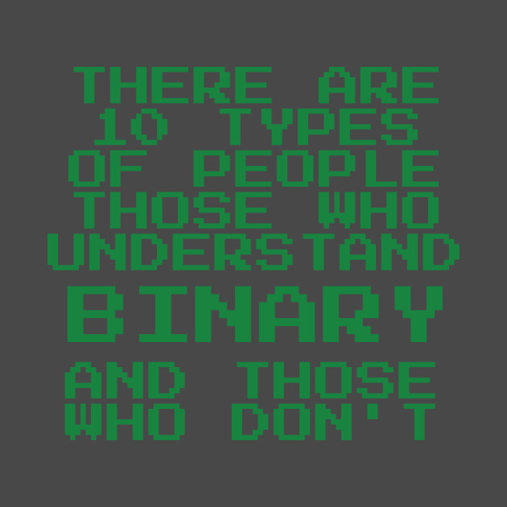

Binary Basics

Binary, put simply, is numbers for computers. Our 0 is their 0, our 1 is their 1, but after that, it gets a little more complicated. Our 2 is 10 in binary, 3 is 11, 4 is 110.
This page will explain why that is.
We use a "decimal" numbering system - the word is derived from the latin word "dec", meaning 10 (as in decade, decagon, decahedron, decalogue, decibel). We have 10 digits,
these being 1, 2, 3, 4, 5, 6, 7, 8, 9, and 0. This is because we have 10 fingers, and although some cultures use or have used other systems, the decimal system is widely accepted
as standard.
A computer doesn't have fingers, and it can't think about numbers the way a human can. Instead, they have transistors or switches, which can be open (off or 0) or closed (on or 1).
Since they only understand 2 values (which we represent as 0 and 1), the numbering system that they use is known as binary (from the latin prefix bi, meaning two, as in biannual or
bidirectional). They can represent any whole number using binary.
The rightmost column is the 1s column. If it's 0, then there is nothing in the 1s column, otherwise, there is something (a 1). Instead of going up to 9 and then using a 10s column,
the next column to the left is how many 2s there are - either 0 or 1. The next is 4s, then 8s, 16s, etc. You can express a number using only the number of bits (digits) you need, but normally,
they are 8 bits or some multiple of 8 (8 bits = 1 byte = 2 nibbles).